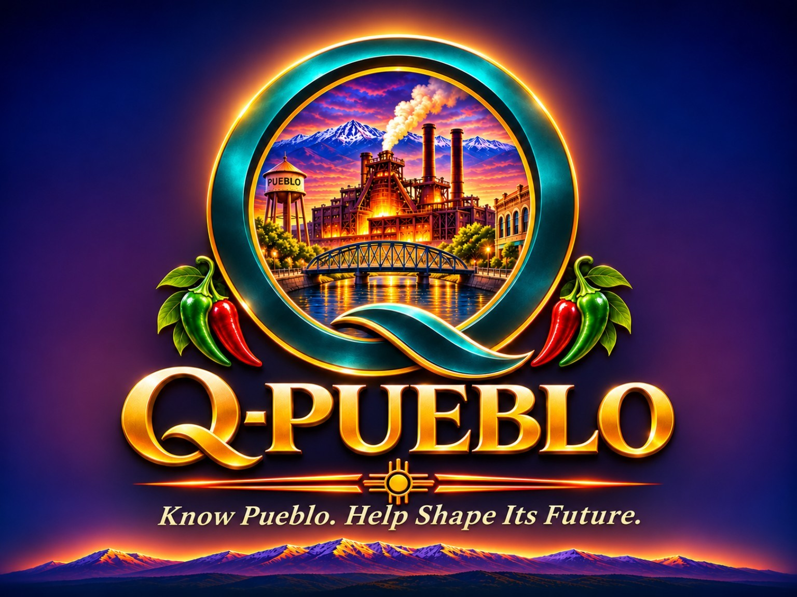

Qified issue or entity packet
Scope a source-linked packet covering history, authority, 5Ws + how, funding, primary/secondary/third-order effects, competing evidence, scenario options, child/community impacts and recommended next steps.

SUPPORT Q-PUEBLO · 2027 SUSTAINABILITY
Q-Pueblo provides public-interest civic information and tools. More involved custom research, Qified issue/entity packets and other requested work can be quoted by email. You can also ask about merchandise, sponsorship and voluntary support. No Stripe, third-party checkout, online payment collection or automatic order acceptance.
Scope a source-linked packet covering history, authority, 5Ws + how, funding, primary/secondary/third-order effects, competing evidence, scenario options, child/community impacts and recommended next steps.
Request a money-trail analysis, EE/T2Y comparison, evidence crosswalk, policy brief, project or organization review, decision-support report or research update.
Ask about approved Q-Pueblo apparel, accessories or quantities. Designs and prices are subject to approval and availability. An email request is not a purchase.
Discuss publicly disclosed support of operating costs, educational outreach or community events. Sponsorship gives no editorial control or privileged civic status.
Ask how to support Q-Pueblo's ongoing costs. No payment instructions are published here and no claim of tax-deductibility is made.
EMAIL-ONLY INQUIRIES
Fill out what you need. The site creates a draft that you can copy or download. It does not upload or retain what you type. The send-by-email option will activate when Q-Pueblo confirms its public contact address.
Subject:
No submission has occurred. Your email application will ask you to review and send the request. Q-Pueblo must separately confirm scope, availability, estimated price, terms and payment method before any paid work begins.